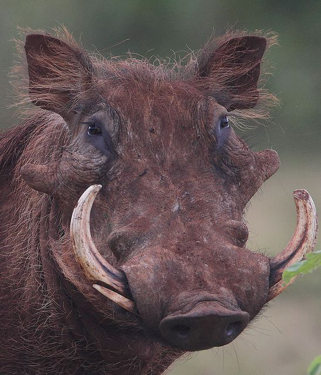

The desert warthog is a member of the pig family. It has a large, warty head, a coarse mane, and two pairs of tusks. Unlike the common warthog, which can be found across most of Africa, the desert warthog only lives in Kenya, Ethiopia, and Somalia. It inhabits savannah and shrubland habitats, feeding on grass and other vegetation, and uses abandoned aardvark burrows for shelter.
The desert warthog is listed by the IUCN as least concern. However, its population faces several risks in Kenya, including growing human and livestock numbers, which increase competition for both water and food.